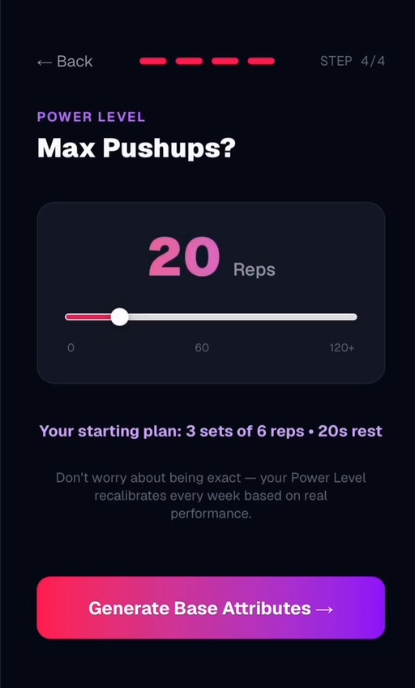
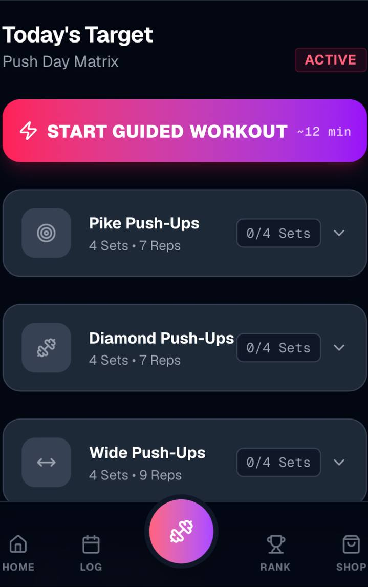
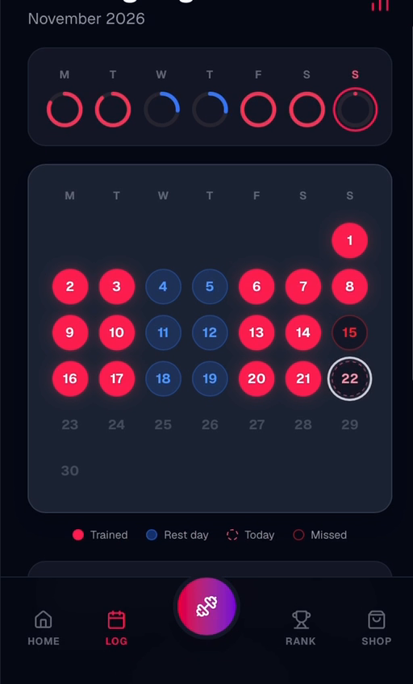
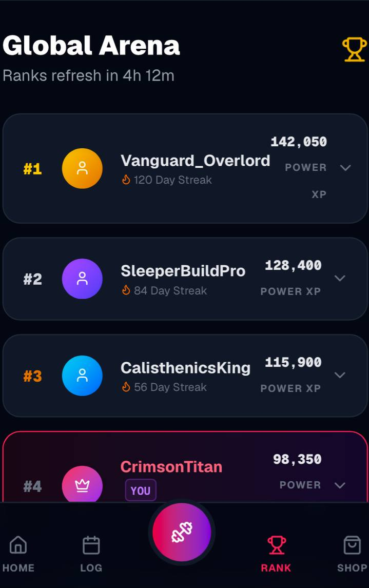
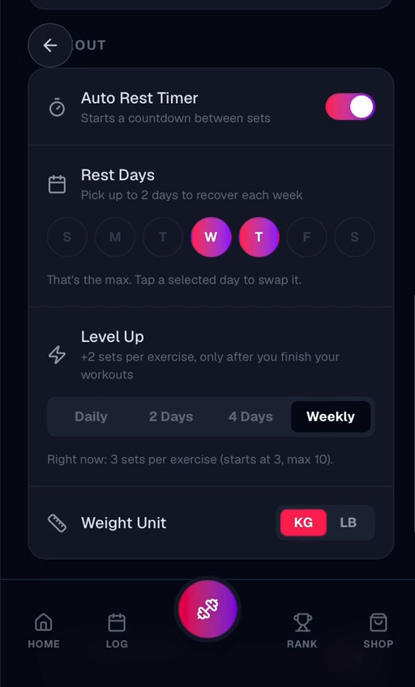
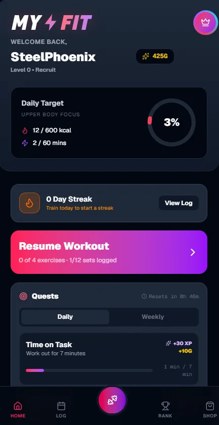
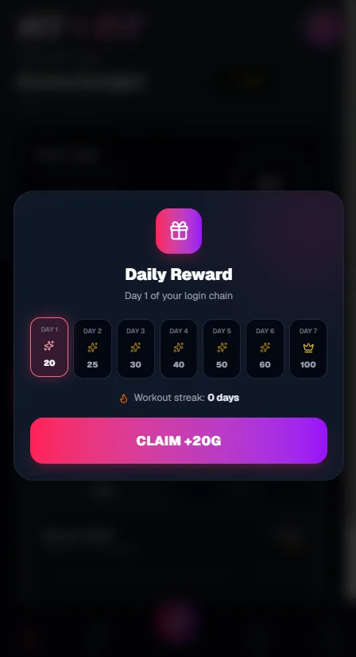
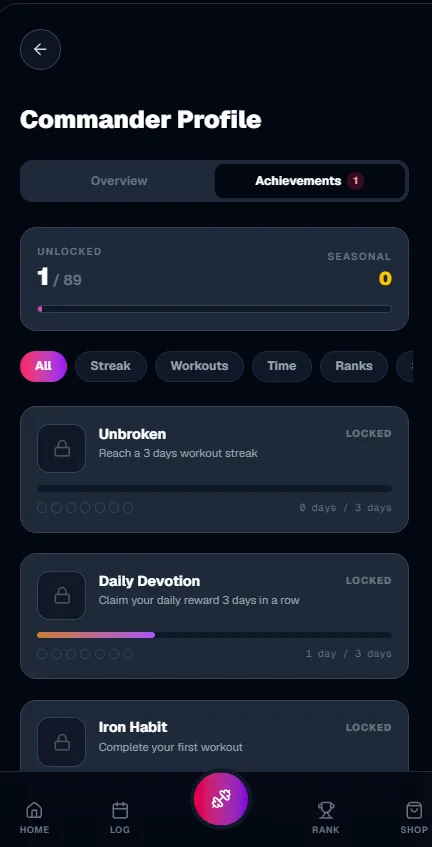
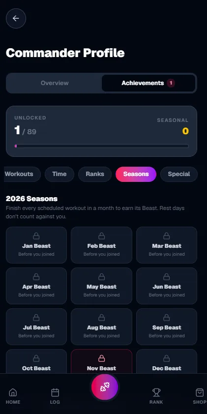
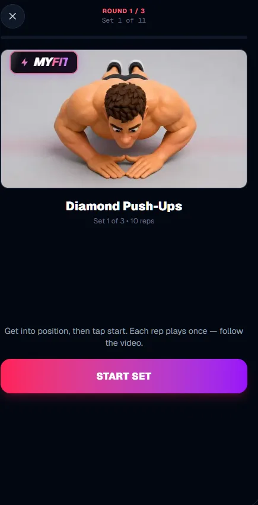

Onboarding that sets your plan
New users create an account, enter their age and weight, pick a training background and set their max push-ups on a slider. The app turns that into a starting plan (for example 3 sets of 6 reps with 20 seconds of rest) and recalibrates it every week.

Home screen
A daily target with a progress ring for calories and minutes, your current streak with your personal best, your gold balance, and a button to resume the workout you started.

Workout plan and guided mode
Today's workout lists every exercise with its sets and reps and a set counter. Tap one to open its form guide, or start the guided workout, which shows the estimated time up front.

Training log
A monthly calendar marks each day as trained, rest day, today or missed, with weekly activity rings above it, so you can see your consistency at a glance.

Ranks and leaderboard
A global leaderboard ranked by Power XP, with streaks and expandable player profiles. The other players are sample data in this demo, and your own progress is saved on your device.

Settings and personalisation
An automatic rest timer between sets, up to two rest days a week, weekly level-ups that add sets only after you finish your workouts, kg or lb units, and a customisable avatar with icons, emoji and gradient colours.

Quests and daily rewards
The home screen has daily and weekly quests that reset on a timer, and each one pays XP and gold when you claim it. A daily login chain pays more each day, up to 100 gold on day 7.


Achievements and seasons
There are 89 achievements across tiered series such as streaks, workouts and time trained. Finishing every scheduled workout in a month earns that month’s Beast badge, and ranks reset each year.


Guided workout with videos
Guided mode plays a short video for each exercise, counts reps, runs the rest timer and keeps the screen on. Your plan comes from your max push-ups and training background.

Try it yourself
Try the guided workouts, streaks and ranks on your phone or desktop.
Launch Live Demo